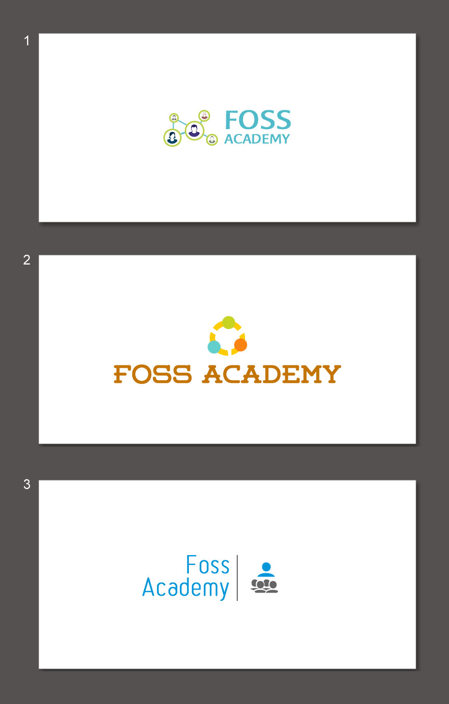

Ditching Pelican
Posted on Mon 28 May 2018 in FOSS,Personal
Will be testing Medium for a while since i am not updating the pelican based site that much lets see how this experiment goes you can read more stories here https://medium.com/@satyakam.dev
Posted on Mon 28 May 2018 in FOSS,Personal
Will be testing Medium for a while since i am not updating the pelican based site that much lets see how this experiment goes you can read more stories here https://medium.com/@satyakam.dev
Posted on Thu 07 November 2013 in community, Contribute, contributions, FOSS, hackathon, Opendata, Personal, privacy, python, social
Data.gov.in. is and was a fun place to work the project in pursuit of an 'idea' was conceived packed and delivered with a short time frame of May-August . Overall the takes from the projects are the team is amazing to work with , with in few days i was …
Posted on Fri 10 May 2013 in community, Education, FOSS, social
Posted on Thu 11 April 2013 in community, hackathon, Opendata, social • Tagged with Hackathon
Planning Commision in Collaboration with NIC especially the Data.gov.in Team ( which is setup according to the NDSAP guildelines) organized a Hackathon to hack the 12th five year plan for those of who are not aware like most of us Five years plans in India are economic blueprints from …
Posted on Sun 31 March 2013 in hackathon, Opendata, social
Data.gov.in is organizing a Hackathon for 12th five year plan .
all the sectors and datasets will be announced on 6th April , also the overall rules , the person to talk to more about the queries would be one Ms Keerthika she can be reached on klkala at gmail.com …
Posted on Tue 05 March 2013 in community, Contribute, contributions, FOSS, GIS, hackathon, Opendata, python
We turned up at the announced event through the facebook events page, had no clue who the organizers were and the place we were going to . The page just mentioned about telling stories with data. Staying with the open data community i had a clue of what was coming , but …
Posted on Tue 26 February 2013 in community, Contribute, contributions, FOSS, fossacademy, social
Few Logos i got from people around let me know which one of them you like through comments to this post.
Posted on Sat 24 November 2012 in community, Contribute, contributions, FOSS, social • Tagged with Community, Education

Got the above logo done by posting for a volunteer job on jobs.hasgeek.com , with in a day of posting i got a very good response the best presentation and entry was from spurline , it had a concept too it said " For me, FOSS events have always being about …
Posted on Sat 17 November 2012 in community, Contribute, FOSS, social, Uncategorized • Tagged with Community, Contributions, Foss
Kevin Carillo: http://kevincarillo.org/ has come out with a Survey to measure Newcomer experience for people who have joined and any of the Debian, FreeBSD (including PC-BSD), GNOME, Gentoo, KDE, Mozilla, Ubuntu, NetBSD, or OpenSUSE** in last three years.
The survey is available .. _here: https://limesurvey.sim.vuw.ac …